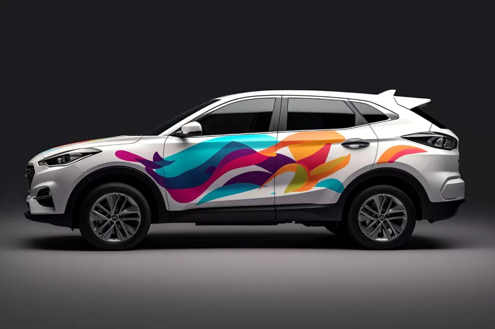
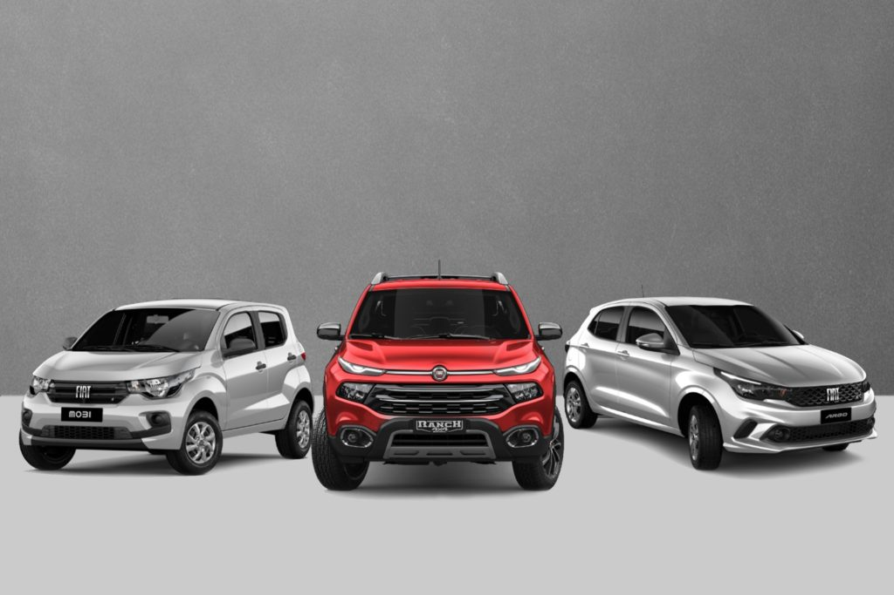
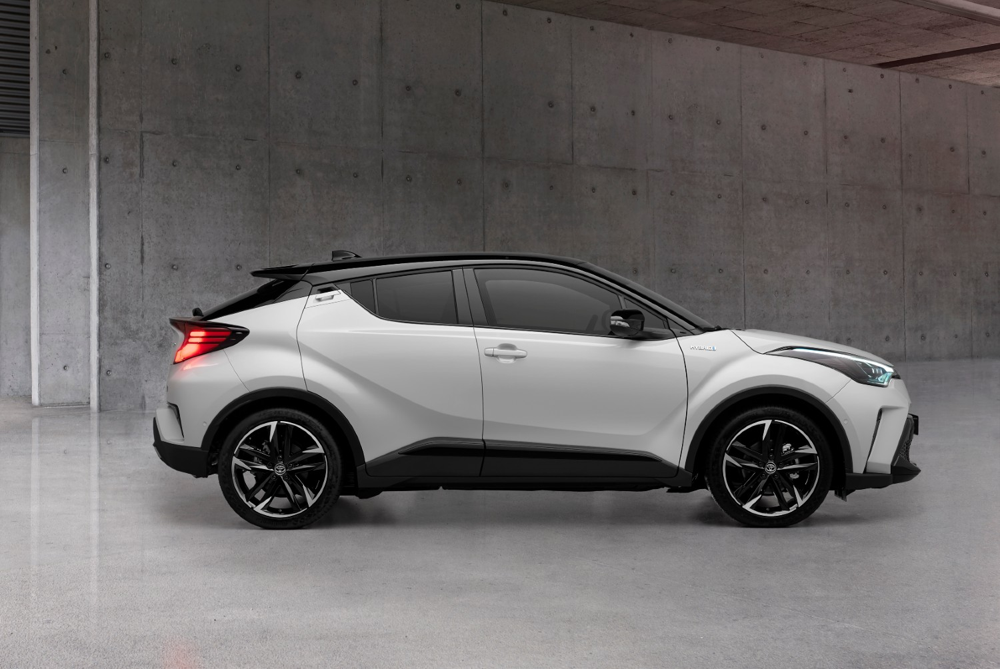

Qual seu tipo de Carro?
Descubra entre os tipos de carros qual o melhor para você
Uma das primeiras etapas no processo de compra de um carro é determinar qual veículo atenderá às suas necessidades. Apesar de parecer simples, pontos como os tipos de carros, consumo de combustível, manutenção de peças são de extrema relevância antes do investimento. Dessa forma, o primeiro passo para escolher o veículo certo para você, é conhecer os tipos de carros mais populares no Brasil e quais são as suas características.
Afinal, um carro não é só um meio de transporte, mas quase um membro da família e um bem material que possui um valor elevado.




↓ Principais tipos de carros ↓
- ♦ Hatch
O hatchback ou simplesmente hatch é um carro que combina o tamanho versátil de um sedan com a capacidade de um station wagon. No lugar do porta-malas tradicional “anexado” à carroceria, o porta-malas do hatch parece embutido ao restante do carro. Assim, o design é mais estiloso e traz a possibilidade de dobrar os bancos traseiros para a frente, não perdendo em capacidade. A abertura do porta-malas do hatch é maior que de outros carros, o que o torna bastante confortável para ser carregado. Antes, o hatch era um design opcional de sedans, mas hoje destaca-se como um dos tipos de carros preferidos dos consumidores. - ♦ Sedan
O sedan já foi um tipo de carro líder do mercado. Ainda é um dos modelos principais, mas podemos dizer que sua época de ouro foi superada. Ele é um carro muito adequado para famílias ou para carregar mais pessoas, pois acomoda até cinco passageiros com conforto. Ele une praticidade, tamanho versátil, conforto e eficiência. Seu porta-malas clássico é aquele que parece “encaixado” no carro, ou seja, se projeta na traseira. Os sedans estão disponíveis em tamanhos pequenos, médios e grandes. Podem contar com itens de luxo e até características mais esportivas. - ♦ SUV
O termo SUV significa, em inglês, sport-utility vehicle, ou seja, veículo utilitário-esportivo. Os modelos disponíveis no mercado podem puxar mais para o lado esportivo ou para o aspecto utilitário. Assim, é comum que o modelo performe bem nas duas funções. Os primeiros SUVs eram basicamente caminhonetes cobertas. A característica de carga está bastante presente, mas hoje em dia há um foco maior nas pessoas. Surge assim o termo “crossover”, o carro que faz a transição entre essas funções. Nem sempre um crossover tem a força de um SUV original. Uma das características principais do SUV e que o fazem ser um dos tipos de carros mais apreciados pelos motoristas é a visão que ele proporciona para dirigir, já que é mais alto que outros carros. O SUV não é muito aerodinâmico, por isso pode ser menos eficiente no consumo de combustível que um hatch ou sedan.